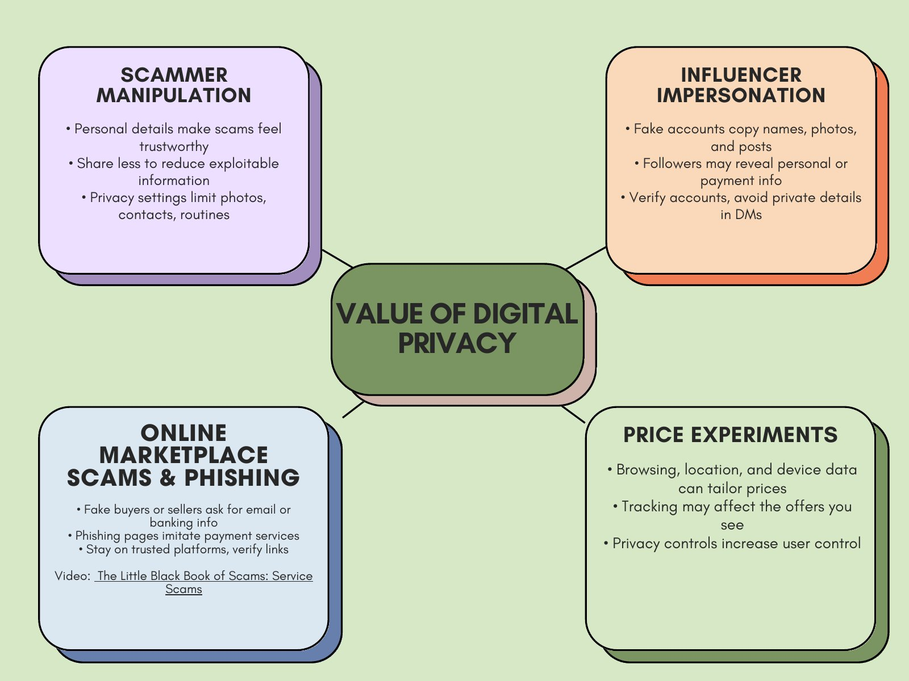

STDV 1115 · Niagara College
The course side of my portfolio: how I learn, the work I did this term, what I built, and how it all connects to the course.
Reading about something rarely sticks for me. I learn by doing it, testing it and fixing it. So instead of a slideshow, I designed a website.
Reflection
When I think about how I actually learn, it has never come from lecture slides or textbook chapters. What works is jumping in, making mistakes and figuring out why something broke.
Motive Power made sense to me because I had my hands on the parts instead of just looking at diagrams. Now that I am taking Business General online, I can see that my best work happens when I mix that hands on habit with computers and planning.
Early in this course I learned the difference between a digital user and a digital learner. A user just goes online. A learner uses those same tools on purpose, to build something or learn something new. This website is my attempt at being a digital learner.
Course work
My STDV 1115 research and reflections on the issues of the digital era, and the one line from each that I would keep.
How digital privacy shows up in my everyday life, from using Apple’s hide my email to spotting a fake eTransfer phishing link while selling headphones on Kijiji. It ends with how companies like Amazon use our data to change what we pay. My mind map breaks the topic into four parts: scammer manipulation, influencer impersonation, marketplace phishing and price experiments.
“Digital privacy is not simply a personal choice, but something essential.”

I compared two articles on screen time and ran both through the CRAAP test. The difference between passive scrolling and active screen time made me rethink how I actually use my devices.
“Every digital learner is a user, but not every user is a learner.”
Research on foreign interference in Canada using two CBC articles, checked with the CRAAP test, plus my breakdown of a political cartoon. It showed me how disinformation is built to manipulate, and why media has to be decoded instead of just consumed.
“Applying these critical thinking skills ensures citizens are not just tools of the mass media.”
A reflection on Simon Lewsen’s idea that grades work like currency, and what that means as an online student with AI tools one click away. I argued that schools should teach students to use AI ethically instead of only trying to catch cheaters.
“Taking the easy way out doesn’t build any practical or transferable real world skills.”
Notes on talks by Naomi Shimada and Peachy Liv about self worth, online toxicity and burnout. In my reflection I explain going semi analog with an A5 notebook and a rOtring 600, and heading to the mountains with only a film camera.
“The best way to find digital harmony is knowing exactly when to leave it behind.”
Reflection
At the start of the term, I gave any website my information without a second thought. After reading how companies track our data and sell it to other companies, I think twice now. These days I sign up with Apple’s Hide My Email, so I still get into the site but my real email stays protected behind a private address.
The assignment that changed my mind the most was the one on AI. Tools like Claude, Gemini and ChatGPT make research a lot faster. Instead of spending two hours going through articles, I send an AI agent out to find sources and report back. I still review what it finds and change the search from there, because the judgment has to stay mine.
One of my week 2 readings treated gaming as wasted screen time, and I went along with it at the time. Looking back, I don’t fully agree. Without gaming I wouldn’t be half the computer person I am today. It taught me almost everything I know about computers, from troubleshooting to writing programs.
Building this site changed my view the most. Animations, clean code and quick fixes take developers years of trial and error to get right. With the help of a Claude agent, the code came together in about three days. I brought the ideas, the photos and the direction, and Claude wrote the code to match.
Projects
Hands on work that shows how I think and solve problems.
A portfolio I designed and directed, coded with the help of a Claude agent and hosted for free on GitHub Pages. How I built it ›
What I learned
My first time using GitHub, and how to connect a custom domain to a site.
Sports, motorsport and portrait work, shot on a Canon 1DX and graded in Lightroom. See the gallery ›
What I learned
Tournament weekends taught me to stay organized under pressure. Photos have to be sorted and online before the event ends.
Process
Apple has one of the best website designs I can think of, so I wanted my site to move like theirs without being a copy. My coding skills are basic, so I brought in Claude and Gemini as development partners. It is like a company hiring a developer: I came up with the idea, the look and everything the site needed to say, and they built it.
What I brought
What Claude handled
This was my first time using GitHub. If you are a developer, it is the site everyone uses, the same way most people use Google even though Yahoo and Bing exist. I also learned how to connect my own domain to GitHub Pages. It was a learning curve, but I ended up with a professional, finished site that costs nothing to host.
In The Digital Currency of Grades, I argued that students should learn to use AI ethically instead of hiding it. This site is me doing exactly that.
Interpersonal skills
How I treat people through a screen, whether it is a stranger on Marketplace or a parent at a tournament.
From Peachy Liv’s talk, I use one question before I reply online: how would I feel if I were the one getting this comment? On Reddit or Facebook Marketplace, I draft my reply, read it over once or twice, and only then send it.
Framework
Empathy first, and personal accountability for the culture I help create online.
At DS Photography I work directly with parents and venue management, from point of sale to print orders. Getting their photos online while the event is still running means clear communication under pressure.
Framework
Clear, calm updates so people always know what is happening and when.
Our group assignment after the Midterm Break will be added here once it is complete.
Course outline
Where each learning outcome shows up in this portfolio.